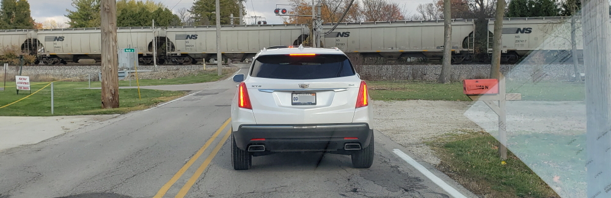
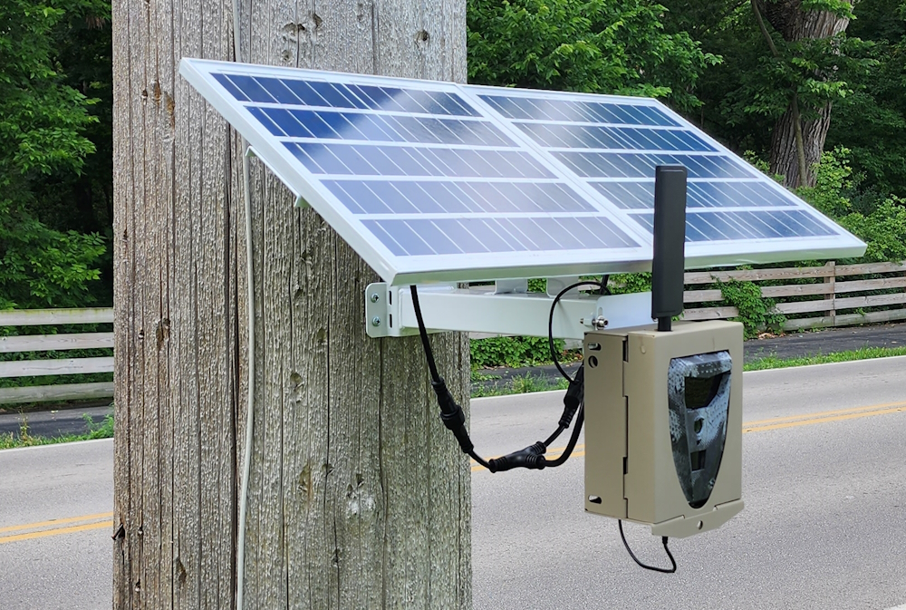
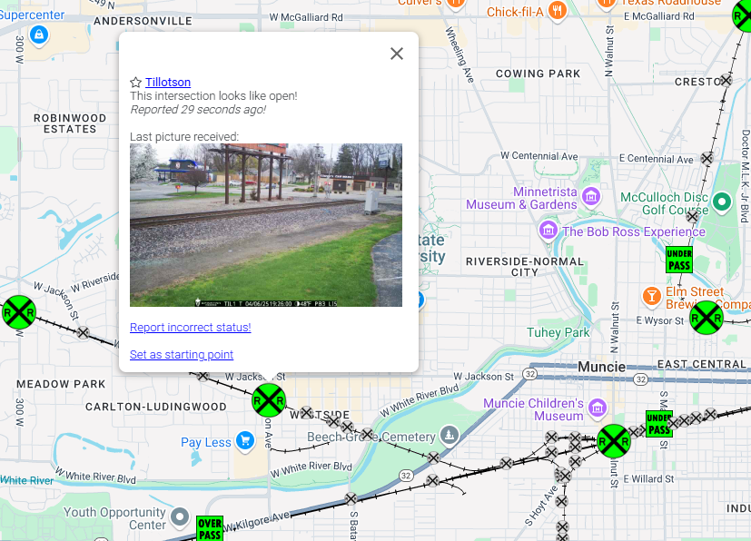
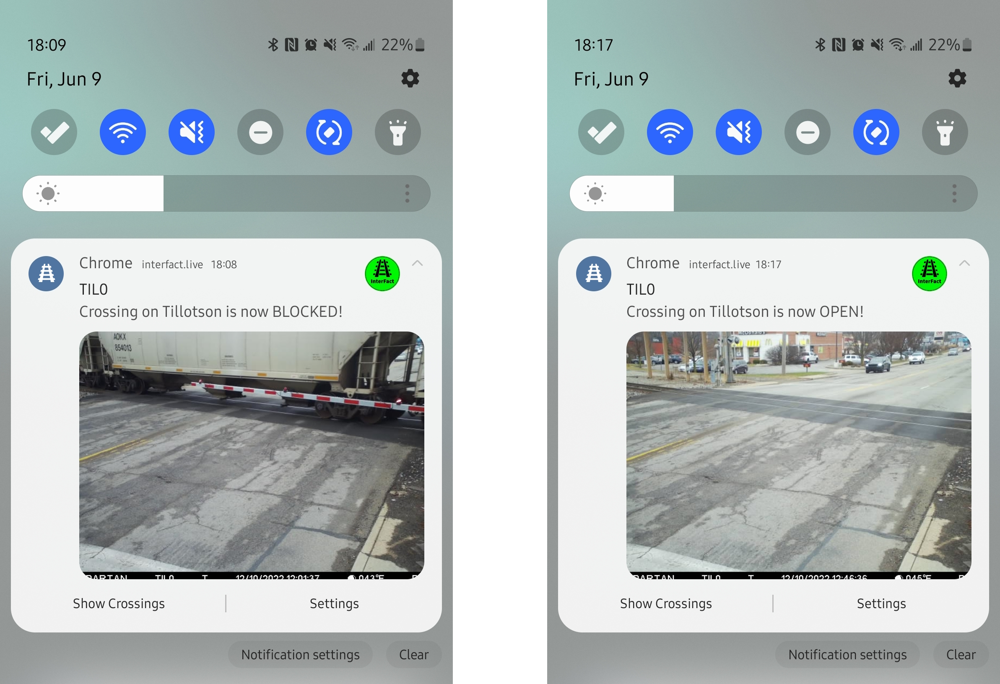

Problem
Solution
Status

One of the most common problems in Muncie (and many cities across the U.S. with complex railway crossings)
is the frequent and unexpected stopping of trains on the roads.
People are delayed on their way to work, meetings, church, doctor appointments, school drop-offs & pickups,
and many other important activities.
According to a survey we conducted with over a hundred residents of Delaware County,
all respondents reported being blocked by a stopped train for anywhere between 5 minutes to over an hour.
This issue also creates serious challenges for first responders trying to reach accident scenes in a timely manner.
Check our solution to this problem.
Problem
Solution
Status
InterFact aims to solve this problem by monitoring the status of each railway intersection in
Delaware County using solar-powered cameras, identifying trains with machine learning,
and presenting the information in a clear and user-friendly way.
All you need to do is check the status of your most frequently used railway intersection before driving.
Here's a look at our cameras:

Users can view all railroad crossings on a map with their most recent status.

Users can enable notifications for any railroad crossing to receive status updates.
As more data is collected, we will also provide predictive analytics for each crossing.

Check the status of the project.
Problem
Solution
Status
With funding from the City of Muncie and Ball State University, the system is now live for the Muncie community at
interfact.live.
It is also being tested for integration with Delaware County Emergency Services.
We offer this system as a service to any city.
If your city is interested in the project, please contact
Dr. Huseyin Ergin.
Please like or follow our Facebook, LinkedIn, or Instagram pages for updates.